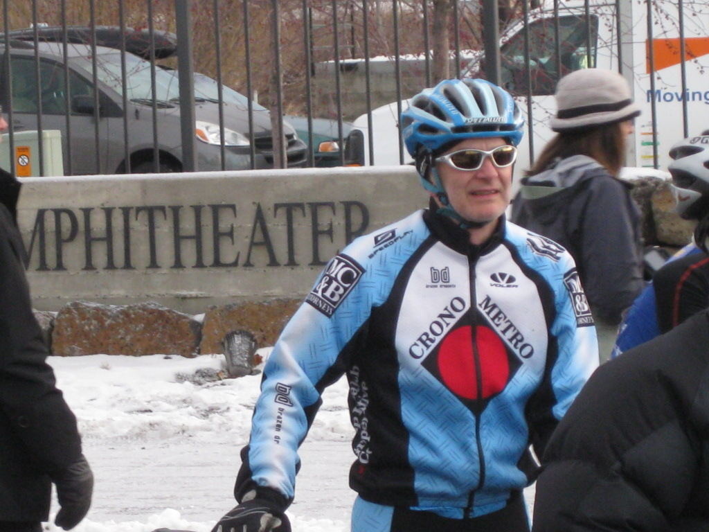
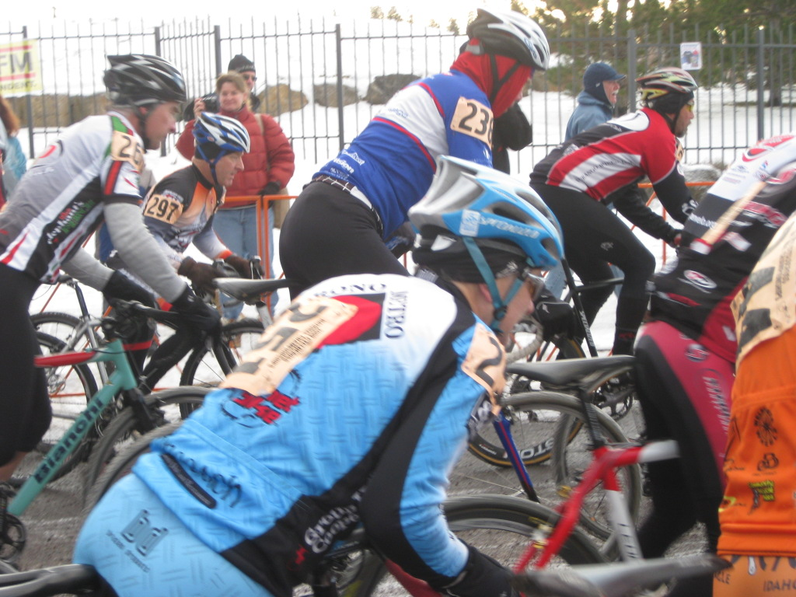
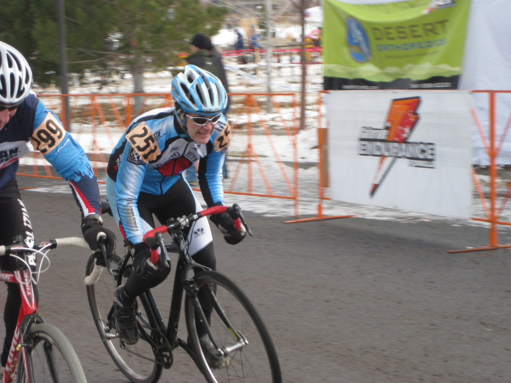
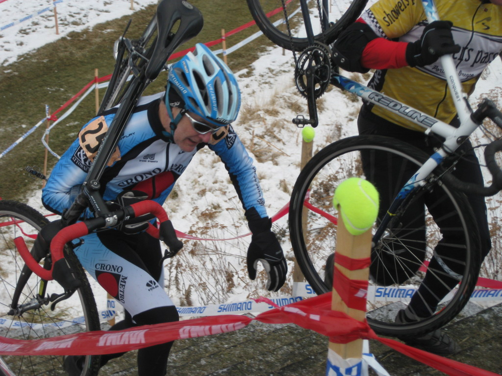
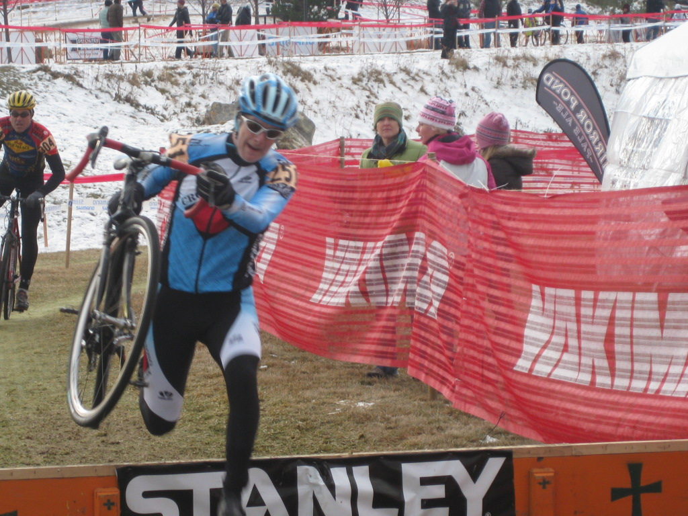

Cyclocross National Championships
Out to Bend, Oregon I traveled to take part in the cyclocross national championships on December 12th, 2009. My friends Deb and Annette drove from near the coast to come see me race. Deb took these wonderful pictures. Each tells it's own story.
 |
| Nervousness takes hold at the start. I was thinking about a rough downhill I had some difficulty with during the course pre-ride. Of course, I was also getting cold standing around waiting for the start. |
|---|
 |
| Just after the start, many of us had to stop because there was a big crash right near the front of the group. |
 |
| Encouraged by yells from Deb and Annette, a few of the other riders were passed during the race. |
 |
| Stairs on the course made for a fun and fast run-up during the race. This was followed by an icy off-camber section that would cause several riders to slip out during the race. |
 |
| A pair of simple barriers were placed up against the beer tent to maximize heckling in the afternoon. |
 |
| I'm happy to be done and appreciate the great photos Deb took during the race (photo by Annette). |